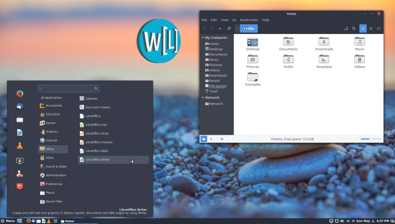

Wasta-Linux: Custom Tailored Linux Desktop for Everyone
For many colleagues and partners here in NE Africa, and presumably
for others around the world, considering Linux is a big change and can
be very intimidating. Having a Linux desktop option that looks and feels
familiar is quite important to help the transition.
The intention of Wasta-Linux is to provide a good balance between
familiarity and functionality for beginning computer users that are
coming to Linux from a Windows XP / Windows 7 background. While there
are many good Linux desktops that successfully aim to re-envision the
standard desktop paradigm, often this significant change can be too much
for many users. Even Windows 10 is now pursuing a very different
desktop paradigm that has alienated many users. While there are valid
reasons behind the design changes in these newer systems, and many
advanced users may find them advantageous, the disorientation and
struggle to "re-learn how to do things" have also left many frustrated.
Thankfully, with Linux the freedom exists to pursue the direction most
appropriate for the needed context, and thus Wasta-Linux was created.
But Wasta-Linux is for more than this audience. Wasta-Linux is running
on high-tech geeks' computers, running as kiosk computers, running as
file servers, running as classroom keyboarding computers, etc. The
approach is "one system for (nearly) all use cases".
Essentially the base Wasta-Linux system which is available here is
just a standard Linux distribution with adjustments to the included
software selections and minor patches and tweaks to some of the settings
and features to enable it to be more effective and intuitive
"out-of-the-box" for a beginning computer user (or an advanced one!).
Here is a screen shot of Wasta-Linux:

Why Linux?
One colleague answered the question "Why Linux" concisely using 3 main points. In brief, Linux is:
- Partner friendly
- Budget friendly
- Customizing friendly
Basically it is about freedom (not just "free as in no cost"), which
means freedom to customize for our work and for our specific users (see
more below on this topic), freedom for all to use it, and "free from
viruses" (yes, eventually there may be Linux viruses). For more on
these freedoms, please read the "case study" on the SIL move from Windows to Linux in NE Africa.
Regional customization of Wasta-Linux: custom tailor it to meet your needs
Beyond individual users that may find the Wasta-Linux system
available here "as-is" to fit them well in their situations, it is
intended that Wasta-Linux can be used as a base for "location specific
customized" versions of Wasta-Linux (providing pre-installed location-specific fonts, keyboards, default
applications, settings, reference documents and training materials, etc.). Once these
"location specific customized Wasta-Linux versions" are made available,
the ease of install of this customized Linux distribution will provide
an opportunity for it to self-propagate throughout the region, even
among low-tech computer users.
If customizing is of interest to you, please see this page ==> Wasta-Linux: Customizing for your needs
So, what is "wasta" anyway?
"Wasta" literally means "intermediary", but it implies more:
it is seen as having "insider connections", or "special favor or
ability to 'side-step the normal process.'" Think of needing to wait
several days in the heat of a government office to get an official
"stamp" on a piece of paper. If you have wasta, then you are
able to come around through the "side door" and get the stamp
immediately. So, Wasta-Linux is essentially "cutting to the front of
the line" for new users to Linux in order to get a usable system without
all the effort of starting from nothing. The analogy doesn't work when
taken too literally, however: don't think there is anything unethical
or illegal in the process! Wasta-Linux is just a light-hearted way to
explain that you get the Linux you have been hoping exists without
needing to hack on it to get it set up as you want!
What Linux desktop does Wasta-Linux use and what Linux distribution is it based on?
With Ubuntu being recognized as the market leader in the Linux ecosystem, it was determined that using Ubuntu as a base for Wasta-Linux is the best choice. Using Ubuntu as a base ensures the broadest compatibility with Linux applications for Wasta-Linux. However, the default Unity interface used by Ubuntu proved challenging to use as it was not familiar enough for users coming from a Windows XP / Windows 7 environment. After a lot of testing with several different Linux desktops,
Cinnamon was chosen as the default "Linux desktop environment" for
Wasta-Linux.
The Linux Mint team created Cinnamon, which is a fork of the
Gnome 3 desktop called "Gnome-Shell". Since the Gnome-Shell interface
has deviated from a "traditional desktop layout" (as defined by
Microsoft over the last 20 years), Cinnamon aims to use the underlying
updated technology of the Gnome 3 base, but change the appearance and
functionality of Gnome-Shell to give a more "familiar and traditional
Windows XP style layout".
In summary, Wasta-Linux is based on Ubuntu with Cinnamon added as the default desktop interface.
How is Wasta-Linux different from Ubuntu + Cinnamon?
As noted above, Wasta-Linux has many customizations when compared to Ubuntu with Cinnamon added. For the curious, here is a summary of some of the significant
modifications:
- "SIL ready":
The SIL Linux repository is included and standard SIL fonts have been added, so that applications such as
Paratext, Fieldworks, Adapt It, WeSay and kmfl (Keyman) are ready for installation from the Software Center.
- Several applications added, several others removed. Notable additions include:
- Wasta-Backup: simple "version backup" utility
- Wasta-Offline: offline software updates and installs
- Wasta-Menus: limits the visible applications in the Main Menu
- Wasta-Resources: centralized distribution of reference and documentation materials
- Skype
- OpenShot: Video editor
- GoldenDict: Offline (and online using Wikipedia or other sources) Dictionary / Thesaurus
- Modem Manager GUI: USB 3G modem tool for balance check and top-up commands
- Pinta: simple to use "MS Paint" alternative
- Klavaro: typing tutor
- some useful command-line utilities such as:
- wavemon: a wifi network diagnostic tool
- traceroute
- iperf: a network throughput test tool
- Centralized update and distribution of "future Wasta customizations": No more being "stranded" as seems to happen with Ubuntu LTS releases.
- PDF booklet printing support added: for providing "page fold" or "booklet" reordering of pages for A5 booklets
- "apt-get update" settings adjusted to "harden" the update process: these changes help prevent hangs or corrupt updates due to ISP caching, poor network, etc.
- "Arc-Darker" theme with Wasta Vertex Ubuntu icons:
Ambiance is used as the default theme in Ubuntu providing the familiar "orange and purple" Ubuntu look. However, it has some compatibility issues with Cinnamon and Nemo (the filemanager used by Cinnamon). To address these issues, the "Arc-Darker" theme with customized Wasta Vertex Ubuntu icons has been chosen. The icons closely match the default Ubuntu icons, but exchange the traditional orange with a more generic "light gray" that can better coordinate with other theme colors.
Additional Wasta-Linux Tutorials
Several Wasta-Linux users have come together to write some great user documentation / tutorials for Wasta-Linux on the LingTranSoft website. Many other useful tutorials for popular language-based software can be found there as well.
Questions or comments?
Leave any questions or comments on the Wasta-Linux Users Forum should you need any help.